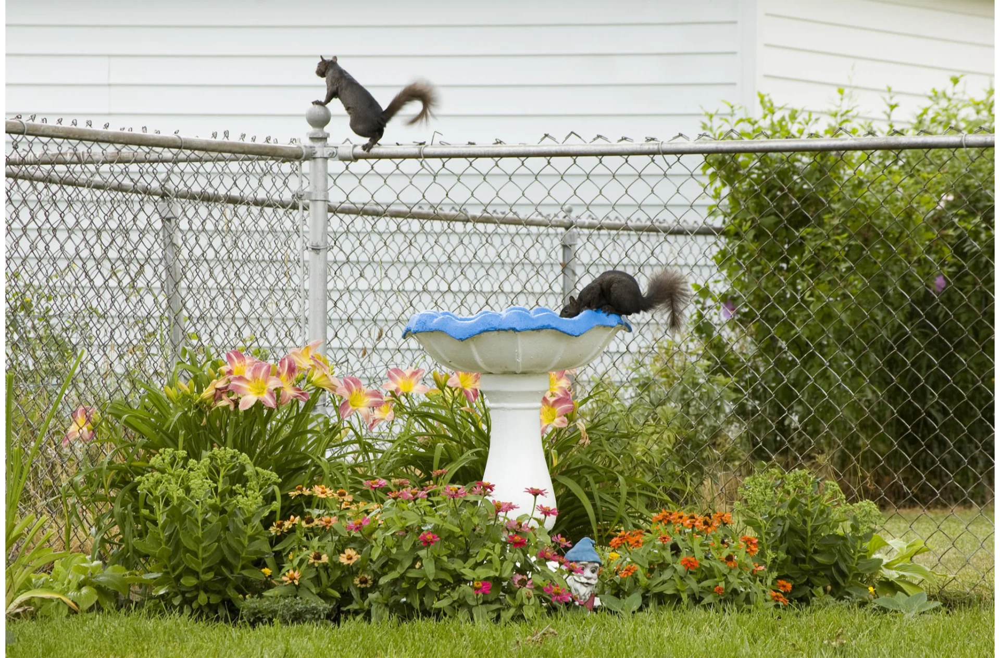
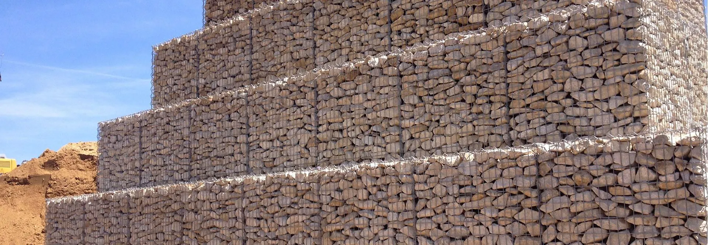
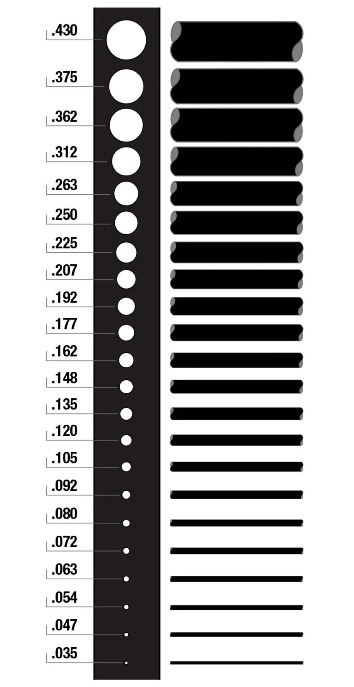
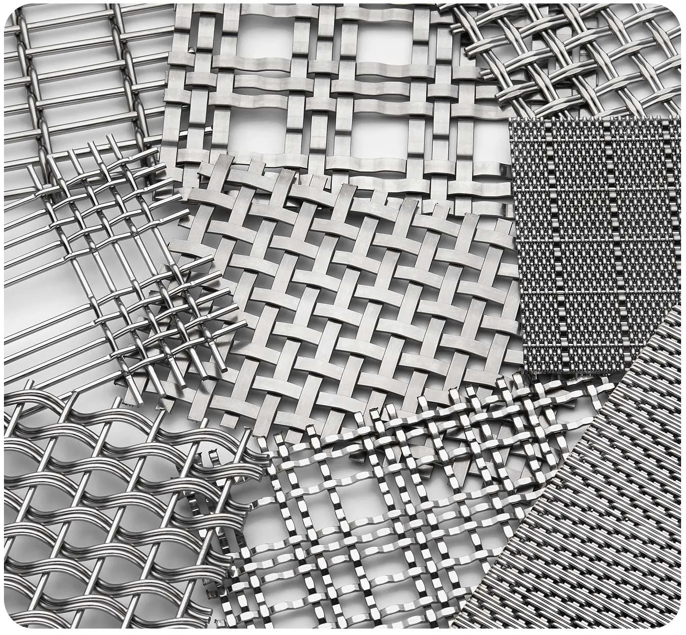

Blog & News
Insights, product information, installation tips, and industry news from the KESTREL METAL team.
Featured Posts
 Featured
Featured7 Things You Probably Didn't Know About Razor Coils
From installation regulations to types and materials, everything you need to know about razor coils.
 Featured
FeaturedRazor Wire Is Most Visible Result of $210M Troop Deployment to US-Mexico Border
Analysis of razor wire deployment in border security operations and what it means for manufacturers and specifiers.
Latest Articles
Product Posts 11 posts

Gabion Boxes Market Research Report 2034
Key findings from the 2034 gabion boxes market report, including growth drivers and regional trends.

Introducing KESTREL WELDED MESH 715
Meet the latest addition to the KESTREL WELDED MESH family and the features that set it apart.

Understanding KESTREL WELDED MESH 711-714
Technical breakdown of the KESTREL WELDED MESH 711-714 series and its recommended applications.

The Future of Wire Mesh in Sustainable Infrastructure
How wire mesh is shaping greener, more sustainable infrastructure projects across the globe.

Dual Fence Security System: Why Two Perimeter Barriers Multiply Security Exponentially
Why a dual fence security system dramatically increases protection compared to a single perimeter barrier.

How to Select the Right Chain Link Fence
Key selection criteria for chain link fencing including gauge, coating, mesh size, and post spacing.

Welded Gabion vs. Twisted Gabion Baskets: Which Is Better for Your Project?
Understand the strengths of welded versus twisted gabion baskets to choose the right option for your build.

The Evolution of Chain Link Fence: 2024 and Beyond
How chain link fence technology and applications are evolving with new coatings and manufacturing methods.
Fence Liability: Escaped Animals
Understanding your fence liability for escaped animals and how proper fencing reduces legal risk.

Kestrel Metal Expands Production Capacity
Kestrel Metal announces expanded production capacity to better serve growing global demand for wire mesh.

Hexagonal Wire Mesh: A Simple Solution with Global Impact
How a simple hexagonal wire mesh product delivers outsized impact in agriculture and construction globally.
Tips & Inspiration 9 posts

How to Calculate the Cost of Wire Mesh for Fence Installation
A step-by-step method for estimating the total cost of wire mesh for a fence installation, including wastage and freight.

When to Replace Your Chain-Link Fence
Signs that your chain-link fence needs replacement and how to plan a cost-effective upgrade.
10 Common Mistakes When Installing Wire Mesh Fencing
Avoid these ten frequent errors when installing wire mesh fencing to ensure a long-lasting, secure result.

NATO-22 Certified Razor Wire: Meeting Global Military Security Standards
Overview of BTC barbed tape concertina products meeting NATO-22 military specifications, with testing and deployment guidance.

Wire Mesh Specification Sheet: How to Read and Interpret Technical Data
Understand wire diameter, aperture size, tensile strength, and coating weight measurements on specification sheets.

How to Install Welded Gabion Boxes: A Complete Step-by-Step Guide
From foundation preparation to stone filling, a complete guide to installing welded gabion boxes for walls and structures.

How to Squirrel-Proof Your Home & Yard With Wire Mesh Screens
Practical ways to use wire mesh screens to keep squirrels out of gardens, attics, and bird feeders.

Field Fence Installation Guide: End Posts, Line Posts & Wire Mesh
Complete field fence installation guide covering end posts, line posts, bracing, and proper wire mesh tensioning.

Why You Should Install a Chain-Link Fence in Your Yard
Durability, low maintenance, budget-friendly pricing, and good visibility make chain-link a smart backyard choice.
Product Information 11 posts

Galvanized vs PVC Coated: Which Fencing Lasts Longer in Coastal Areas?
Comparative analysis of galvanized and PVC-coated fencing in saltwater environments, with real-world durability data.

Epoxy Coated vs Galvanised Woven Wire Mesh: A Complete Comparison
A detailed head-to-head comparison of epoxy coated and galvanised woven wire mesh across performance, cost, and lifespan.
Steel Mesh & Expanded Metal Plastering for Masonry Wall Reinforcement
How steel mesh and expanded metal are used in plastering and masonry wall reinforcement to prevent cracking.
Who's Really Protecting Your Perimeter? Why Weld Strength Matters More Than Wire Gauge
Learn why weld strength is the true measure of fence panel quality and why wire gauge alone is not enough.

Plain vs Twill Weave Stainless Steel Wire Mesh: A Complete Comparison
Technical comparison of plain and twill weave stainless steel wire mesh for filtration and screening applications.

Hexagonal Wire Mesh vs Gabion Mesh: Key Differences & How to Choose
Understand the structural and application differences between hexagonal wire mesh and gabion mesh to pick the right product.

Architectural Wire Mesh: Blending Security with Modern Aesthetics
How architectural wire mesh combines security with modern building aesthetics for facades, partitions, and cladding.

Materials for Welded Wire Mesh
Explore the base materials, wire grades, and coatings used to manufacture durable welded wire mesh.

Sintered Wire Mesh Filters: Technology & Applications
How sintered wire mesh multilayer filters work and their role in precision filtration for demanding industries.

Comprehensive Guide to Stainless Steel Welded Wire Mesh Panels and Applications
An in-depth guide covering stainless steel welded wire mesh panels, their specifications, and where they are best used.

Versatile Wire Mesh Products For Your Market
A broad look at the many sectors served by versatile wire mesh products, from construction to agriculture.
Stay Updated
Looking for a specific topic or need expert advice? Contact our team for product guidance and technical support.